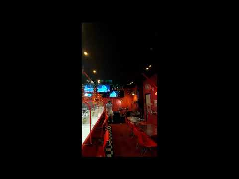
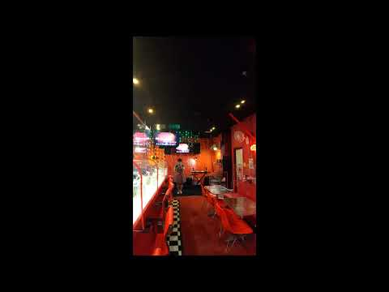
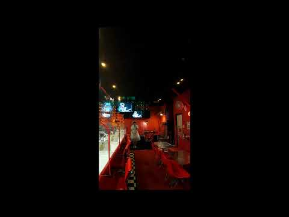
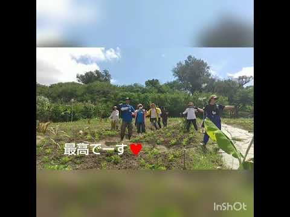

Works
活動の記録
ライブ、ウクレレ・サンレレ、ラジオ。紫あゆなの表現が生まれた場所をご紹介します。
Official Social
最新の活動はこちら
ご本人が運用するSNSで、最新の出演情報やパフォーマンスをご覧いただけます。
Works
ライブ、ウクレレ・サンレレ、ラジオ。紫あゆなの表現が生まれた場所をご紹介します。
Selected Works





リスナーに寄り添うトークと、地域の魅力を届ける番組進行。
Official Social
ご本人が運用するSNSで、最新の出演情報やパフォーマンスをご覧いただけます。